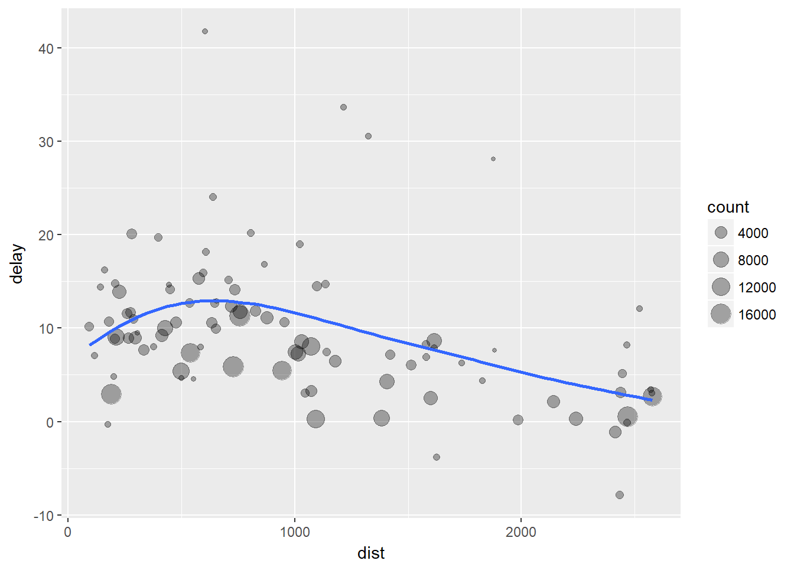
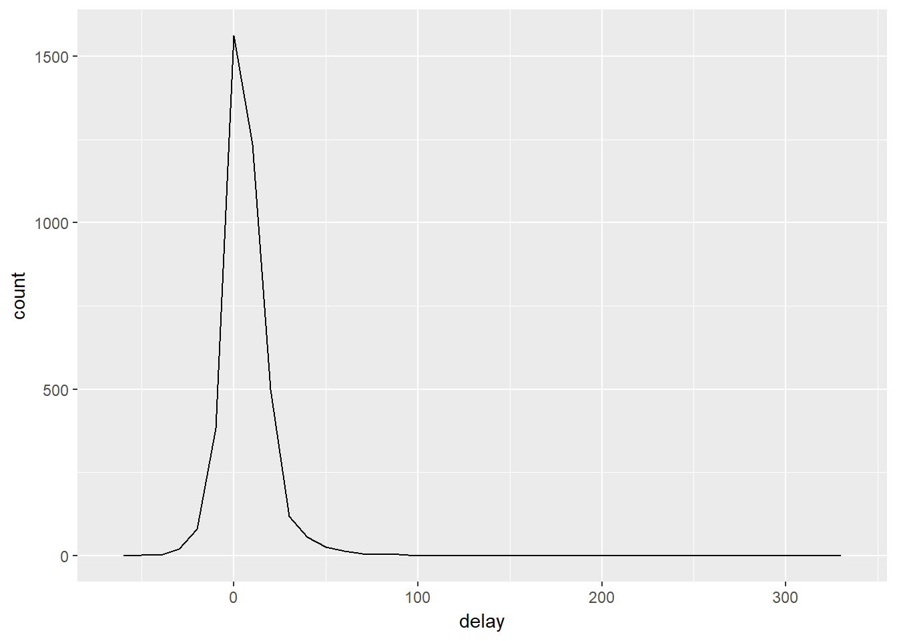

Transformación de datos con dplyr
if(!require(tidyverse)){
install.packages('tidyverse')
require(tidyverse)
} else{
require(tidyverse)
}
if(!require(nycflights13)){
install.packages('nycflights13')
require(nycflights13)
} else{
require(nycflights13)
}Introducción
Rara vez los datos están presentados en la forma en que se necesitan, por tanto requieren preparación: crear nuevas variables o resúmenes, renombrar variables, ordenar observaciones, etc. En este capítulo se enseña como transformar sus datos usando el paquete dplyr y un nuevo conjunto de datos sobre vuelos que salieron de la ciudad de New York en 2013.
Prerrequisitos
Para entender el uso del paquete dplyr se usarán datos del paquete nycflights13 y la librería ggplot2.
nycflights13
Para explorar los verbos de la manipulación básica de datos de dplyr, se usará el data frame nycflights13::flights que contiene todos los \(336,776\) vuelos que salieron de la ciudad de New York en 2013. La documentación está en ?flights:
flights## # A tibble: 336,776 x 19
## year month day dep_time sched_dep_time dep_delay arr_time
## <int> <int> <int> <int> <int> <dbl> <int>
## 1 2013 1 1 517 515 2 830
## 2 2013 1 1 533 529 4 850
## 3 2013 1 1 542 540 2 923
## 4 2013 1 1 544 545 -1 1004
## 5 2013 1 1 554 600 -6 812
## 6 2013 1 1 554 558 -4 740
## 7 2013 1 1 555 600 -5 913
## 8 2013 1 1 557 600 -3 709
## 9 2013 1 1 557 600 -3 838
## 10 2013 1 1 558 600 -2 753
## # ... with 336,766 more rows, and 12 more variables: sched_arr_time <int>,
## # arr_delay <dbl>, carrier <chr>, flight <int>, tailnum <chr>,
## # origin <chr>, dest <chr>, air_time <dbl>, distance <dbl>, hour <dbl>,
## # minute <dbl>, time_hour <dttm>Note que este objeto es un Tibble, que es una versión moderna de un data frame, donde una de las diferencias consiste en mostrar una fila con abreviaturas de tres o cuatro letras que indica el tipo de variable:
- int: enteros.
- dbl: dobles o reales.
- chr: vectores o cadenas de caractéres.
- dttm: fechas-tiempos (una fecha + un tiempo).
- lgl: vectores lógicos con valores FALSO o VERDADERO.
- fctr: factores, que son una representación usada por R de variables categóricas con un número fijo de valores posibles.
- date: fechas.
Conceptos básicos de dplyr
Hay cinco funciones clave de dplyr que permiten resolver la mayoría de los retos de manipulación de datos:
- Escoger observaciones por sus valores (filter())
- Reordenar las filas (arrange())
- Escoger variables por sus nombres (select())
- Crear nueva variables con funciones de variables existentes (mutate())
- Contraer muchos valores a un resumen simple (summarize())
Todas ellas se pueden usar con la función group_by(), el cual cambia el alcance de la función de todo el conjunto de datos a solo de grupo en grupo. Estas seis funciones proporcionan los verbos para un lenguaje de manipulación de datos.
Todos los verbos trabajan de forma similar:
- El primer argumento es un dat frame.
- Los siguientes argumentos describen que hacer con el data frame, usando los nombres de variables (sin comillas).
- El resultado es un nuevo data frame.
Estas propiedades juntas hacen fácil encadenar múltiples pasos simples a la vez para llevar a cabo un resultado complejo. Veamos en detalle como estos verbos trabajan.
Filtrar filas con filter()
filter() le permite obtener un subconjunto de observaciones basado en sus valores. Por ejemplo, seleccionemos los vuelos del primero de Enero con:
filter(flights, month == 1, day == 1)## # A tibble: 842 x 19
## year month day dep_time sched_dep_time dep_delay arr_time
## <int> <int> <int> <int> <int> <dbl> <int>
## 1 2013 1 1 517 515 2 830
## 2 2013 1 1 533 529 4 850
## 3 2013 1 1 542 540 2 923
## 4 2013 1 1 544 545 -1 1004
## 5 2013 1 1 554 600 -6 812
## 6 2013 1 1 554 558 -4 740
## 7 2013 1 1 555 600 -5 913
## 8 2013 1 1 557 600 -3 709
## 9 2013 1 1 557 600 -3 838
## 10 2013 1 1 558 600 -2 753
## # ... with 832 more rows, and 12 more variables: sched_arr_time <int>,
## # arr_delay <dbl>, carrier <chr>, flight <int>, tailnum <chr>,
## # origin <chr>, dest <chr>, air_time <dbl>, distance <dbl>, hour <dbl>,
## # minute <dbl>, time_hour <dttm>Note que el resultado es un nuevo data frame (dplyr nunca modificará el data frame de entrada), que puede ser guardado debe usando el operador de asignación <-:
jan1 <- filter(flights, month == 1, day == 1)R imprime los resultados o los guarda en una variable. Si se quiere hacer ambas se necesita colocar la asignación entre paréntesis:
(dec25 <- filter(flights, month == 12, day == 25))## # A tibble: 719 x 19
## year month day dep_time sched_dep_time dep_delay arr_time
## <int> <int> <int> <int> <int> <dbl> <int>
## 1 2013 12 25 456 500 -4 649
## 2 2013 12 25 524 515 9 805
## 3 2013 12 25 542 540 2 832
## 4 2013 12 25 546 550 -4 1022
## 5 2013 12 25 556 600 -4 730
## 6 2013 12 25 557 600 -3 743
## 7 2013 12 25 557 600 -3 818
## 8 2013 12 25 559 600 -1 855
## 9 2013 12 25 559 600 -1 849
## 10 2013 12 25 600 600 0 850
## # ... with 709 more rows, and 12 more variables: sched_arr_time <int>,
## # arr_delay <dbl>, carrier <chr>, flight <int>, tailnum <chr>,
## # origin <chr>, dest <chr>, air_time <dbl>, distance <dbl>, hour <dbl>,
## # minute <dbl>, time_hour <dttm>Comparaciones
Para usar el filtrado eficientemente, se debe saber como seleccionar las observaciones con operadores de comparación. R proporciona el conjunto estándar: >, >=, <, <=, != (diferente) y == (igual).
Operadores lógicos
Como vimos antes al especificar múltiples argumentos en filter() éstos se combinan con “and”, esto es para que una fila sea incluida en el subconjunto todas las expresiones deben ser verdaderas. Para otros tipos de combinaciones se necesitan los operadores booleanos: & es “and”, | es “or” y ! es “not”. La siguiente figura muestra el conjunto completo de operaciones booleanas.
El siguiente código encuentra todos los vuelos que salieron en noviembre o diciembre:
filter(flights, month == 11 | month == 12)## # A tibble: 55,403 x 19
## year month day dep_time sched_dep_time dep_delay arr_time
## <int> <int> <int> <int> <int> <dbl> <int>
## 1 2013 11 1 5 2359 6 352
## 2 2013 11 1 35 2250 105 123
## 3 2013 11 1 455 500 -5 641
## 4 2013 11 1 539 545 -6 856
## 5 2013 11 1 542 545 -3 831
## 6 2013 11 1 549 600 -11 912
## 7 2013 11 1 550 600 -10 705
## 8 2013 11 1 554 600 -6 659
## 9 2013 11 1 554 600 -6 826
## 10 2013 11 1 554 600 -6 749
## # ... with 55,393 more rows, and 12 more variables: sched_arr_time <int>,
## # arr_delay <dbl>, carrier <chr>, flight <int>, tailnum <chr>,
## # origin <chr>, dest <chr>, air_time <dbl>, distance <dbl>, hour <dbl>,
## # minute <dbl>, time_hour <dttm>Una abreviación para el ejemplo anterior es usar:
nov_dec <- filter(flights, month %in% c(11, 12))La expresión x %in% y selecciona las filas donde X asume uno de los valores en y.
Ahora, si quiere encontrar vuelos que no estuvieron demorados (en la llegada o en la salida) por más de dos horas, se puede usar cualquiera de los dos filtros siguientes:
filter(flights, !(arr_delay > 120 | dep_delay > 120))## # A tibble: 316,050 x 19
## year month day dep_time sched_dep_time dep_delay arr_time
## <int> <int> <int> <int> <int> <dbl> <int>
## 1 2013 1 1 517 515 2 830
## 2 2013 1 1 533 529 4 850
## 3 2013 1 1 542 540 2 923
## 4 2013 1 1 544 545 -1 1004
## 5 2013 1 1 554 600 -6 812
## 6 2013 1 1 554 558 -4 740
## 7 2013 1 1 555 600 -5 913
## 8 2013 1 1 557 600 -3 709
## 9 2013 1 1 557 600 -3 838
## 10 2013 1 1 558 600 -2 753
## # ... with 316,040 more rows, and 12 more variables: sched_arr_time <int>,
## # arr_delay <dbl>, carrier <chr>, flight <int>, tailnum <chr>,
## # origin <chr>, dest <chr>, air_time <dbl>, distance <dbl>, hour <dbl>,
## # minute <dbl>, time_hour <dttm>filter(flights, arr_delay <= 120, dep_delay <= 120)## # A tibble: 316,050 x 19
## year month day dep_time sched_dep_time dep_delay arr_time
## <int> <int> <int> <int> <int> <dbl> <int>
## 1 2013 1 1 517 515 2 830
## 2 2013 1 1 533 529 4 850
## 3 2013 1 1 542 540 2 923
## 4 2013 1 1 544 545 -1 1004
## 5 2013 1 1 554 600 -6 812
## 6 2013 1 1 554 558 -4 740
## 7 2013 1 1 555 600 -5 913
## 8 2013 1 1 557 600 -3 709
## 9 2013 1 1 557 600 -3 838
## 10 2013 1 1 558 600 -2 753
## # ... with 316,040 more rows, and 12 more variables: sched_arr_time <int>,
## # arr_delay <dbl>, carrier <chr>, flight <int>, tailnum <chr>,
## # origin <chr>, dest <chr>, air_time <dbl>, distance <dbl>, hour <dbl>,
## # minute <dbl>, time_hour <dttm>Valores faltantes
Una característica importante de R que puede hacer la comparación engañosa es los valores faltantes o NAs.
filter() solo incluye filas donde la condición es cierta, excluyendo tanto los valores falsos como los NAs. Si se quieren preservar los valores faltantes se debe especificar. veamos los dos comportamientos en el siguiente ejemplo:
df <- tibble(x = c(1, NA, 3))
filter(df, x > 1)## # A tibble: 1 x 1
## x
## <dbl>
## 1 3filter(df, is.na(x) | x > 1)## # A tibble: 2 x 1
## x
## <dbl>
## 1 NA
## 2 3Ejercicios
- Encuentre todos los vuelos que:
- Tuvieron una llegada demorada de dos o más horas
#?flights
filter(flights, arr_delay >= 120)## # A tibble: 10,200 x 19
## year month day dep_time sched_dep_time dep_delay arr_time
## <int> <int> <int> <int> <int> <dbl> <int>
## 1 2013 1 1 811 630 101 1047
## 2 2013 1 1 848 1835 853 1001
## 3 2013 1 1 957 733 144 1056
## 4 2013 1 1 1114 900 134 1447
## 5 2013 1 1 1505 1310 115 1638
## 6 2013 1 1 1525 1340 105 1831
## 7 2013 1 1 1549 1445 64 1912
## 8 2013 1 1 1558 1359 119 1718
## 9 2013 1 1 1732 1630 62 2028
## 10 2013 1 1 1803 1620 103 2008
## # ... with 10,190 more rows, and 12 more variables: sched_arr_time <int>,
## # arr_delay <dbl>, carrier <chr>, flight <int>, tailnum <chr>,
## # origin <chr>, dest <chr>, air_time <dbl>, distance <dbl>, hour <dbl>,
## # minute <dbl>, time_hour <dttm>- Volaron a Houston (IAH or HOU)
filter(flights, dest %in% c("IAH","HOU"))## # A tibble: 9,313 x 19
## year month day dep_time sched_dep_time dep_delay arr_time
## <int> <int> <int> <int> <int> <dbl> <int>
## 1 2013 1 1 517 515 2 830
## 2 2013 1 1 533 529 4 850
## 3 2013 1 1 623 627 -4 933
## 4 2013 1 1 728 732 -4 1041
## 5 2013 1 1 739 739 0 1104
## 6 2013 1 1 908 908 0 1228
## 7 2013 1 1 1028 1026 2 1350
## 8 2013 1 1 1044 1045 -1 1352
## 9 2013 1 1 1114 900 134 1447
## 10 2013 1 1 1205 1200 5 1503
## # ... with 9,303 more rows, and 12 more variables: sched_arr_time <int>,
## # arr_delay <dbl>, carrier <chr>, flight <int>, tailnum <chr>,
## # origin <chr>, dest <chr>, air_time <dbl>, distance <dbl>, hour <dbl>,
## # minute <dbl>, time_hour <dttm>- Fueron operados por United, American, o Delta
filter(flights, carrier %in% c("UA", "AA", "DL"))## # A tibble: 139,504 x 19
## year month day dep_time sched_dep_time dep_delay arr_time
## <int> <int> <int> <int> <int> <dbl> <int>
## 1 2013 1 1 517 515 2 830
## 2 2013 1 1 533 529 4 850
## 3 2013 1 1 542 540 2 923
## 4 2013 1 1 554 600 -6 812
## 5 2013 1 1 554 558 -4 740
## 6 2013 1 1 558 600 -2 753
## 7 2013 1 1 558 600 -2 924
## 8 2013 1 1 558 600 -2 923
## 9 2013 1 1 559 600 -1 941
## 10 2013 1 1 559 600 -1 854
## # ... with 139,494 more rows, and 12 more variables: sched_arr_time <int>,
## # arr_delay <dbl>, carrier <chr>, flight <int>, tailnum <chr>,
## # origin <chr>, dest <chr>, air_time <dbl>, distance <dbl>, hour <dbl>,
## # minute <dbl>, time_hour <dttm>- Salieron en verano (July, August y September)
filter(flights, month %in% c(7, 8, 9))## # A tibble: 86,326 x 19
## year month day dep_time sched_dep_time dep_delay arr_time
## <int> <int> <int> <int> <int> <dbl> <int>
## 1 2013 7 1 1 2029 212 236
## 2 2013 7 1 2 2359 3 344
## 3 2013 7 1 29 2245 104 151
## 4 2013 7 1 43 2130 193 322
## 5 2013 7 1 44 2150 174 300
## 6 2013 7 1 46 2051 235 304
## 7 2013 7 1 48 2001 287 308
## 8 2013 7 1 58 2155 183 335
## 9 2013 7 1 100 2146 194 327
## 10 2013 7 1 100 2245 135 337
## # ... with 86,316 more rows, and 12 more variables: sched_arr_time <int>,
## # arr_delay <dbl>, carrier <chr>, flight <int>, tailnum <chr>,
## # origin <chr>, dest <chr>, air_time <dbl>, distance <dbl>, hour <dbl>,
## # minute <dbl>, time_hour <dttm>- Llegaron más de dos horas tarde pero no salieron tarde
filter(flights, arr_delay >= 120 & dep_delay <= 0)## # A tibble: 29 x 19
## year month day dep_time sched_dep_time dep_delay arr_time
## <int> <int> <int> <int> <int> <dbl> <int>
## 1 2013 1 27 1419 1420 -1 1754
## 2 2013 10 7 1350 1350 0 1736
## 3 2013 10 7 1357 1359 -2 1858
## 4 2013 10 16 657 700 -3 1258
## 5 2013 11 1 658 700 -2 1329
## 6 2013 3 18 1844 1847 -3 39
## 7 2013 4 17 1635 1640 -5 2049
## 8 2013 4 18 558 600 -2 1149
## 9 2013 4 18 655 700 -5 1213
## 10 2013 5 22 1827 1830 -3 2217
## # ... with 19 more rows, and 12 more variables: sched_arr_time <int>,
## # arr_delay <dbl>, carrier <chr>, flight <int>, tailnum <chr>,
## # origin <chr>, dest <chr>, air_time <dbl>, distance <dbl>, hour <dbl>,
## # minute <dbl>, time_hour <dttm>- Se demoraron al menos una hora pero completaron más de 30 minutos de vuelo
filter(flights, (dep_delay >= 0 & arr_delay >= 0 & dep_delay + arr_delay >= 60) & air_time > 30)## # A tibble: 47,932 x 19
## year month day dep_time sched_dep_time dep_delay arr_time
## <int> <int> <int> <int> <int> <dbl> <int>
## 1 2013 1 1 732 645 47 1011
## 2 2013 1 1 749 710 39 939
## 3 2013 1 1 811 630 101 1047
## 4 2013 1 1 826 715 71 1136
## 5 2013 1 1 848 1835 853 1001
## 6 2013 1 1 903 820 43 1045
## 7 2013 1 1 909 810 59 1331
## 8 2013 1 1 933 904 29 1252
## 9 2013 1 1 953 921 32 1320
## 10 2013 1 1 957 733 144 1056
## # ... with 47,922 more rows, and 12 more variables: sched_arr_time <int>,
## # arr_delay <dbl>, carrier <chr>, flight <int>, tailnum <chr>,
## # origin <chr>, dest <chr>, air_time <dbl>, distance <dbl>, hour <dbl>,
## # minute <dbl>, time_hour <dttm>- Salieron entre la medianoche y las 6am (inclusive)
filter(flights, dep_time <= 600 | dep_time == 2400)## # A tibble: 9,373 x 19
## year month day dep_time sched_dep_time dep_delay arr_time
## <int> <int> <int> <int> <int> <dbl> <int>
## 1 2013 1 1 517 515 2 830
## 2 2013 1 1 533 529 4 850
## 3 2013 1 1 542 540 2 923
## 4 2013 1 1 544 545 -1 1004
## 5 2013 1 1 554 600 -6 812
## 6 2013 1 1 554 558 -4 740
## 7 2013 1 1 555 600 -5 913
## 8 2013 1 1 557 600 -3 709
## 9 2013 1 1 557 600 -3 838
## 10 2013 1 1 558 600 -2 753
## # ... with 9,363 more rows, and 12 more variables: sched_arr_time <int>,
## # arr_delay <dbl>, carrier <chr>, flight <int>, tailnum <chr>,
## # origin <chr>, dest <chr>, air_time <dbl>, distance <dbl>, hour <dbl>,
## # minute <dbl>, time_hour <dttm>- Otra ayuda útil para filtrado de dplyr es between(). Qué hace?
Su sintáxis es between(x, left, right) y es una abreviación para x >= left & x <= right.
Puede usarlo para simplificar el código neccestado para respondr los retos previos? Si, veamos: d. Salieron en verano (July, August y September)
filter(flights, between(month, 7, 9))## # A tibble: 86,326 x 19
## year month day dep_time sched_dep_time dep_delay arr_time
## <int> <int> <int> <int> <int> <dbl> <int>
## 1 2013 7 1 1 2029 212 236
## 2 2013 7 1 2 2359 3 344
## 3 2013 7 1 29 2245 104 151
## 4 2013 7 1 43 2130 193 322
## 5 2013 7 1 44 2150 174 300
## 6 2013 7 1 46 2051 235 304
## 7 2013 7 1 48 2001 287 308
## 8 2013 7 1 58 2155 183 335
## 9 2013 7 1 100 2146 194 327
## 10 2013 7 1 100 2245 135 337
## # ... with 86,316 more rows, and 12 more variables: sched_arr_time <int>,
## # arr_delay <dbl>, carrier <chr>, flight <int>, tailnum <chr>,
## # origin <chr>, dest <chr>, air_time <dbl>, distance <dbl>, hour <dbl>,
## # minute <dbl>, time_hour <dttm>- Cuántos vuelos tienen un dep_time faltante?
nrow(filter(flights, is.na(dep_time)))## [1] 8255Cuáles otras variables son faltantes? Qué podrían estas filas representar?
summary(filter(flights, is.na(dep_time)))## year month day dep_time
## Min. :2013 Min. : 1.000 Min. : 1.0 Min. : NA
## 1st Qu.:2013 1st Qu.: 3.000 1st Qu.: 8.0 1st Qu.: NA
## Median :2013 Median : 6.000 Median :12.0 Median : NA
## Mean :2013 Mean : 5.927 Mean :14.6 Mean :NaN
## 3rd Qu.:2013 3rd Qu.: 8.000 3rd Qu.:23.0 3rd Qu.: NA
## Max. :2013 Max. :12.000 Max. :31.0 Max. : NA
## NA's :8255
## sched_dep_time dep_delay arr_time sched_arr_time
## Min. : 106 Min. : NA Min. : NA Min. : 1
## 1st Qu.:1159 1st Qu.: NA 1st Qu.: NA 1st Qu.:1330
## Median :1559 Median : NA Median : NA Median :1749
## Mean :1492 Mean :NaN Mean :NaN Mean :1669
## 3rd Qu.:1855 3rd Qu.: NA 3rd Qu.: NA 3rd Qu.:2049
## Max. :2359 Max. : NA Max. : NA Max. :2359
## NA's :8255 NA's :8255
## arr_delay carrier flight tailnum
## Min. : NA Length:8255 Min. : 1 Length:8255
## 1st Qu.: NA Class :character 1st Qu.:1577 Class :character
## Median : NA Mode :character Median :3535 Mode :character
## Mean :NaN Mean :3063
## 3rd Qu.: NA 3rd Qu.:4373
## Max. : NA Max. :6177
## NA's :8255
## origin dest air_time distance
## Length:8255 Length:8255 Min. : NA Min. : 17.0
## Class :character Class :character 1st Qu.: NA 1st Qu.: 292.0
## Mode :character Mode :character Median : NA Median : 583.0
## Mean :NaN Mean : 695.4
## 3rd Qu.: NA 3rd Qu.: 872.0
## Max. : NA Max. :4963.0
## NA's :8255
## hour minute time_hour
## Min. : 1.00 Min. : 0.00 Min. :2013-01-01 06:00:00
## 1st Qu.:11.00 1st Qu.: 5.00 1st Qu.:2013-03-07 07:00:00
## Median :15.00 Median :27.00 Median :2013-06-12 18:00:00
## Mean :14.67 Mean :25.61 Mean :2013-06-13 06:42:11
## 3rd Qu.:18.00 3rd Qu.:42.00 3rd Qu.:2013-08-22 15:30:00
## Max. :23.00 Max. :59.00 Max. :2013-12-31 20:00:00
## Las variables faltants son: dep_time, dep_delay, arr_time, arr_delay y air_time. Estas filas pueden representar vuelos cancelados.
- Por qué NA ^ 0 no es faltante? Por qué NA | TRUE no es faltante? Por qué FALSE & NA no es faltante? Puede descifrar la regla general? (NA * 0 es un contraejemplo engañoso!)
NA ^ 0## [1] 1NA | TRUE## [1] TRUEFALSE & NA## [1] FALSENA * 0## [1] NANA no tiene efecto sobre operadores lógicos, pero si sobre los operadores aritméticos, excepto la potencia cero que da 1.
Ordenar filas con arrange()
arrange() trabaja de forma similar a filter() excepto que en lugar de seleccionar filas cambia su orden. Para ello toma un data frame y un conjunto de nombres de columnas (o expresiones más complicadas) para ordenar por ellas. Por ejemplo:
arrange(flights, year, month, day)## # A tibble: 336,776 x 19
## year month day dep_time sched_dep_time dep_delay arr_time
## <int> <int> <int> <int> <int> <dbl> <int>
## 1 2013 1 1 517 515 2 830
## 2 2013 1 1 533 529 4 850
## 3 2013 1 1 542 540 2 923
## 4 2013 1 1 544 545 -1 1004
## 5 2013 1 1 554 600 -6 812
## 6 2013 1 1 554 558 -4 740
## 7 2013 1 1 555 600 -5 913
## 8 2013 1 1 557 600 -3 709
## 9 2013 1 1 557 600 -3 838
## 10 2013 1 1 558 600 -2 753
## # ... with 336,766 more rows, and 12 more variables: sched_arr_time <int>,
## # arr_delay <dbl>, carrier <chr>, flight <int>, tailnum <chr>,
## # origin <chr>, dest <chr>, air_time <dbl>, distance <dbl>, hour <dbl>,
## # minute <dbl>, time_hour <dttm>Se puede usar desc() para reordenar por una columna en orden descendente:
arrange(flights, desc(arr_delay))## # A tibble: 336,776 x 19
## year month day dep_time sched_dep_time dep_delay arr_time
## <int> <int> <int> <int> <int> <dbl> <int>
## 1 2013 1 9 641 900 1301 1242
## 2 2013 6 15 1432 1935 1137 1607
## 3 2013 1 10 1121 1635 1126 1239
## 4 2013 9 20 1139 1845 1014 1457
## 5 2013 7 22 845 1600 1005 1044
## 6 2013 4 10 1100 1900 960 1342
## 7 2013 3 17 2321 810 911 135
## 8 2013 7 22 2257 759 898 121
## 9 2013 12 5 756 1700 896 1058
## 10 2013 5 3 1133 2055 878 1250
## # ... with 336,766 more rows, and 12 more variables: sched_arr_time <int>,
## # arr_delay <dbl>, carrier <chr>, flight <int>, tailnum <chr>,
## # origin <chr>, dest <chr>, air_time <dbl>, distance <dbl>, hour <dbl>,
## # minute <dbl>, time_hour <dttm>Los valores faltantes son también ordenados al final:
df <- tibble(x = c(5, 2, NA))
arrange(df, x)## # A tibble: 3 x 1
## x
## <dbl>
## 1 2
## 2 5
## 3 NAO en forma descendente:
arrange(df, desc(x))## # A tibble: 3 x 1
## x
## <dbl>
## 1 5
## 2 2
## 3 NAEjercicios
- Como se podrían ordenar todos los valores faltantes al inicio usando arrange()? (Ayuda: use is.na())
arrange(flights, desc(is.na(dep_time)))## # A tibble: 336,776 x 19
## year month day dep_time sched_dep_time dep_delay arr_time
## <int> <int> <int> <int> <int> <dbl> <int>
## 1 2013 1 1 NA 1630 NA NA
## 2 2013 1 1 NA 1935 NA NA
## 3 2013 1 1 NA 1500 NA NA
## 4 2013 1 1 NA 600 NA NA
## 5 2013 1 2 NA 1540 NA NA
## 6 2013 1 2 NA 1620 NA NA
## 7 2013 1 2 NA 1355 NA NA
## 8 2013 1 2 NA 1420 NA NA
## 9 2013 1 2 NA 1321 NA NA
## 10 2013 1 2 NA 1545 NA NA
## # ... with 336,766 more rows, and 12 more variables: sched_arr_time <int>,
## # arr_delay <dbl>, carrier <chr>, flight <int>, tailnum <chr>,
## # origin <chr>, dest <chr>, air_time <dbl>, distance <dbl>, hour <dbl>,
## # minute <dbl>, time_hour <dttm>- Organice los vuelos para encontrar los más demorados.
arrange(flights, desc(arr_delay+dep_delay))## # A tibble: 336,776 x 19
## year month day dep_time sched_dep_time dep_delay arr_time
## <int> <int> <int> <int> <int> <dbl> <int>
## 1 2013 1 9 641 900 1301 1242
## 2 2013 6 15 1432 1935 1137 1607
## 3 2013 1 10 1121 1635 1126 1239
## 4 2013 9 20 1139 1845 1014 1457
## 5 2013 7 22 845 1600 1005 1044
## 6 2013 4 10 1100 1900 960 1342
## 7 2013 3 17 2321 810 911 135
## 8 2013 7 22 2257 759 898 121
## 9 2013 12 5 756 1700 896 1058
## 10 2013 5 3 1133 2055 878 1250
## # ... with 336,766 more rows, and 12 more variables: sched_arr_time <int>,
## # arr_delay <dbl>, carrier <chr>, flight <int>, tailnum <chr>,
## # origin <chr>, dest <chr>, air_time <dbl>, distance <dbl>, hour <dbl>,
## # minute <dbl>, time_hour <dttm>Encuentre los vuelos que partieron antes.
arrange(flights, dep_delay)## # A tibble: 336,776 x 19
## year month day dep_time sched_dep_time dep_delay arr_time
## <int> <int> <int> <int> <int> <dbl> <int>
## 1 2013 12 7 2040 2123 -43 40
## 2 2013 2 3 2022 2055 -33 2240
## 3 2013 11 10 1408 1440 -32 1549
## 4 2013 1 11 1900 1930 -30 2233
## 5 2013 1 29 1703 1730 -27 1947
## 6 2013 8 9 729 755 -26 1002
## 7 2013 10 23 1907 1932 -25 2143
## 8 2013 3 30 2030 2055 -25 2213
## 9 2013 3 2 1431 1455 -24 1601
## 10 2013 5 5 934 958 -24 1225
## # ... with 336,766 more rows, and 12 more variables: sched_arr_time <int>,
## # arr_delay <dbl>, carrier <chr>, flight <int>, tailnum <chr>,
## # origin <chr>, dest <chr>, air_time <dbl>, distance <dbl>, hour <dbl>,
## # minute <dbl>, time_hour <dttm>- Ordene los vuelos para encontrar los vuelos las rápidos.
arrange(flights, desc(distance/air_time))## # A tibble: 336,776 x 19
## year month day dep_time sched_dep_time dep_delay arr_time
## <int> <int> <int> <int> <int> <dbl> <int>
## 1 2013 5 25 1709 1700 9 1923
## 2 2013 7 2 1558 1513 45 1745
## 3 2013 5 13 2040 2025 15 2225
## 4 2013 3 23 1914 1910 4 2045
## 5 2013 1 12 1559 1600 -1 1849
## 6 2013 11 17 650 655 -5 1059
## 7 2013 2 21 2355 2358 -3 412
## 8 2013 11 17 759 800 -1 1212
## 9 2013 11 16 2003 1925 38 17
## 10 2013 11 16 2349 2359 -10 402
## # ... with 336,766 more rows, and 12 more variables: sched_arr_time <int>,
## # arr_delay <dbl>, carrier <chr>, flight <int>, tailnum <chr>,
## # origin <chr>, dest <chr>, air_time <dbl>, distance <dbl>, hour <dbl>,
## # minute <dbl>, time_hour <dttm>- Cuáles vuelos viajaron la mayor distancia?
arrange(flights, desc(distance))## # A tibble: 336,776 x 19
## year month day dep_time sched_dep_time dep_delay arr_time
## <int> <int> <int> <int> <int> <dbl> <int>
## 1 2013 1 1 857 900 -3 1516
## 2 2013 1 2 909 900 9 1525
## 3 2013 1 3 914 900 14 1504
## 4 2013 1 4 900 900 0 1516
## 5 2013 1 5 858 900 -2 1519
## 6 2013 1 6 1019 900 79 1558
## 7 2013 1 7 1042 900 102 1620
## 8 2013 1 8 901 900 1 1504
## 9 2013 1 9 641 900 1301 1242
## 10 2013 1 10 859 900 -1 1449
## # ... with 336,766 more rows, and 12 more variables: sched_arr_time <int>,
## # arr_delay <dbl>, carrier <chr>, flight <int>, tailnum <chr>,
## # origin <chr>, dest <chr>, air_time <dbl>, distance <dbl>, hour <dbl>,
## # minute <dbl>, time_hour <dttm>Cuáles viajaron la menor distancia?
arrange(flights, distance)## # A tibble: 336,776 x 19
## year month day dep_time sched_dep_time dep_delay arr_time
## <int> <int> <int> <int> <int> <dbl> <int>
## 1 2013 7 27 NA 106 NA NA
## 2 2013 1 3 2127 2129 -2 2222
## 3 2013 1 4 1240 1200 40 1333
## 4 2013 1 4 1829 1615 134 1937
## 5 2013 1 4 2128 2129 -1 2218
## 6 2013 1 5 1155 1200 -5 1241
## 7 2013 1 6 2125 2129 -4 2224
## 8 2013 1 7 2124 2129 -5 2212
## 9 2013 1 8 2127 2130 -3 2304
## 10 2013 1 9 2126 2129 -3 2217
## # ... with 336,766 more rows, and 12 more variables: sched_arr_time <int>,
## # arr_delay <dbl>, carrier <chr>, flight <int>, tailnum <chr>,
## # origin <chr>, dest <chr>, air_time <dbl>, distance <dbl>, hour <dbl>,
## # minute <dbl>, time_hour <dttm>Seleccionar columnas con select()
select() le permite acercarse rápidamente a un subconjunto útil usando operaciones basadas en los nombres de las variables. Por ejemplo:
select(flights, year, month, day)## # A tibble: 336,776 x 3
## year month day
## <int> <int> <int>
## 1 2013 1 1
## 2 2013 1 1
## 3 2013 1 1
## 4 2013 1 1
## 5 2013 1 1
## 6 2013 1 1
## 7 2013 1 1
## 8 2013 1 1
## 9 2013 1 1
## 10 2013 1 1
## # ... with 336,766 more rowso equivalentemente:
select(flights, year:day)## # A tibble: 336,776 x 3
## year month day
## <int> <int> <int>
## 1 2013 1 1
## 2 2013 1 1
## 3 2013 1 1
## 4 2013 1 1
## 5 2013 1 1
## 6 2013 1 1
## 7 2013 1 1
## 8 2013 1 1
## 9 2013 1 1
## 10 2013 1 1
## # ... with 336,766 more rowsSi lo que se quiere es excluir un conjunto adyacente de variables:
select(flights, -(year:day))## # A tibble: 336,776 x 16
## dep_time sched_dep_time dep_delay arr_time sched_arr_time arr_delay
## <int> <int> <dbl> <int> <int> <dbl>
## 1 517 515 2 830 819 11
## 2 533 529 4 850 830 20
## 3 542 540 2 923 850 33
## 4 544 545 -1 1004 1022 -18
## 5 554 600 -6 812 837 -25
## 6 554 558 -4 740 728 12
## 7 555 600 -5 913 854 19
## 8 557 600 -3 709 723 -14
## 9 557 600 -3 838 846 -8
## 10 558 600 -2 753 745 8
## # ... with 336,766 more rows, and 10 more variables: carrier <chr>,
## # flight <int>, tailnum <chr>, origin <chr>, dest <chr>, air_time <dbl>,
## # distance <dbl>, hour <dbl>, minute <dbl>, time_hour <dttm>Hay una serie de funciones auxiliares que se pueden usar dentro de select():
- starts_with(“abc”): variables cuyos nombres comienzan con “abc”.
- ends_with(“xyz”): variables cuyos nombres terminan en “xyz”.
- contains(“ijk”): variables cuyos nombres contienen “ijk”.
- matches(“(.)\1”): variables que coinciden con una expresión regular. Detalles de expresiones regulares en el Capítulo 11.
- num_range(“x”, 1:3): variables con nombres x1, x2 y x3.
Ver ?select para más detalles.
Para renombrar variables use rename() que es una variante de select() que conserva todas las variables que no son explícitamente mencionadas:
rename(flights, tail_num = tailnum)## # A tibble: 336,776 x 19
## year month day dep_time sched_dep_time dep_delay arr_time
## <int> <int> <int> <int> <int> <dbl> <int>
## 1 2013 1 1 517 515 2 830
## 2 2013 1 1 533 529 4 850
## 3 2013 1 1 542 540 2 923
## 4 2013 1 1 544 545 -1 1004
## 5 2013 1 1 554 600 -6 812
## 6 2013 1 1 554 558 -4 740
## 7 2013 1 1 555 600 -5 913
## 8 2013 1 1 557 600 -3 709
## 9 2013 1 1 557 600 -3 838
## 10 2013 1 1 558 600 -2 753
## # ... with 336,766 more rows, and 12 more variables: sched_arr_time <int>,
## # arr_delay <dbl>, carrier <chr>, flight <int>, tail_num <chr>,
## # origin <chr>, dest <chr>, air_time <dbl>, distance <dbl>, hour <dbl>,
## # minute <dbl>, time_hour <dttm>Otra opción es usar select() junto con el auxiliar everything(), que es útil si tiene un puñado de variables que le gustaría mover al inicio del data.frame:
select(flights, time_hour, air_time, everything())## # A tibble: 336,776 x 19
## time_hour air_time year month day dep_time sched_dep_time
## <dttm> <dbl> <int> <int> <int> <int> <int>
## 1 2013-01-01 05:00:00 227 2013 1 1 517 515
## 2 2013-01-01 05:00:00 227 2013 1 1 533 529
## 3 2013-01-01 05:00:00 160 2013 1 1 542 540
## 4 2013-01-01 05:00:00 183 2013 1 1 544 545
## 5 2013-01-01 06:00:00 116 2013 1 1 554 600
## 6 2013-01-01 05:00:00 150 2013 1 1 554 558
## 7 2013-01-01 06:00:00 158 2013 1 1 555 600
## 8 2013-01-01 06:00:00 53 2013 1 1 557 600
## 9 2013-01-01 06:00:00 140 2013 1 1 557 600
## 10 2013-01-01 06:00:00 138 2013 1 1 558 600
## # ... with 336,766 more rows, and 12 more variables: dep_delay <dbl>,
## # arr_time <int>, sched_arr_time <int>, arr_delay <dbl>, carrier <chr>,
## # flight <int>, tailnum <chr>, origin <chr>, dest <chr>, distance <dbl>,
## # hour <dbl>, minute <dbl>Ejercicios
- Lluvia de ideas de todas las maneras posibles de seleccionar dep_time, dep_delay, arr_time y arr_delay desde flights.
select(flights, dep_time, dep_delay, arr_time, arr_delay)## # A tibble: 336,776 x 4
## dep_time dep_delay arr_time arr_delay
## <int> <dbl> <int> <dbl>
## 1 517 2 830 11
## 2 533 4 850 20
## 3 542 2 923 33
## 4 544 -1 1004 -18
## 5 554 -6 812 -25
## 6 554 -4 740 12
## 7 555 -5 913 19
## 8 557 -3 709 -14
## 9 557 -3 838 -8
## 10 558 -2 753 8
## # ... with 336,766 more rowsselect(flights, c(dep_time, dep_delay, arr_time, arr_delay))## # A tibble: 336,776 x 4
## dep_time dep_delay arr_time arr_delay
## <int> <dbl> <int> <dbl>
## 1 517 2 830 11
## 2 533 4 850 20
## 3 542 2 923 33
## 4 544 -1 1004 -18
## 5 554 -6 812 -25
## 6 554 -4 740 12
## 7 555 -5 913 19
## 8 557 -3 709 -14
## 9 557 -3 838 -8
## 10 558 -2 753 8
## # ... with 336,766 more rowsselect(flights, starts_with("dep"), starts_with("arr"))## # A tibble: 336,776 x 4
## dep_time dep_delay arr_time arr_delay
## <int> <dbl> <int> <dbl>
## 1 517 2 830 11
## 2 533 4 850 20
## 3 542 2 923 33
## 4 544 -1 1004 -18
## 5 554 -6 812 -25
## 6 554 -4 740 12
## 7 555 -5 913 19
## 8 557 -3 709 -14
## 9 557 -3 838 -8
## 10 558 -2 753 8
## # ... with 336,766 more rowsselect(flights, contains("dep"), contains("arr"), -starts_with("sch"))## # A tibble: 336,776 x 5
## dep_time dep_delay arr_time arr_delay carrier
## <int> <dbl> <int> <dbl> <chr>
## 1 517 2 830 11 UA
## 2 533 4 850 20 UA
## 3 542 2 923 33 AA
## 4 544 -1 1004 -18 B6
## 5 554 -6 812 -25 DL
## 6 554 -4 740 12 UA
## 7 555 -5 913 19 B6
## 8 557 -3 709 -14 EV
## 9 557 -3 838 -8 B6
## 10 558 -2 753 8 AA
## # ... with 336,766 more rowsselect(flights, dep_time, dep_delay, arr_time, arr_delay)## # A tibble: 336,776 x 4
## dep_time dep_delay arr_time arr_delay
## <int> <dbl> <int> <dbl>
## 1 517 2 830 11
## 2 533 4 850 20
## 3 542 2 923 33
## 4 544 -1 1004 -18
## 5 554 -6 812 -25
## 6 554 -4 740 12
## 7 555 -5 913 19
## 8 557 -3 709 -14
## 9 557 -3 838 -8
## 10 558 -2 753 8
## # ... with 336,766 more rows- Qué sucede si se incluye el nombre de una variable múltiples veces en un llamado select()?
select(flights, dep_time, dep_time, arr_time, arr_delay)## # A tibble: 336,776 x 3
## dep_time arr_time arr_delay
## <int> <int> <dbl>
## 1 517 830 11
## 2 533 850 20
## 3 542 923 33
## 4 544 1004 -18
## 5 554 812 -25
## 6 554 740 12
## 7 555 913 19
## 8 557 709 -14
## 9 557 838 -8
## 10 558 753 8
## # ... with 336,766 more rowsLo ignora…
- Qué hace la función one_of()? Por qué podría ser útil en conjunto con este vector?
vars <- c(
"year", "month", "day", "dep_delay", "arr_delay"
)one_of() es una función auxiliar que selecciona las variables de un vector. Por ejemplo:
select(flights, one_of(vars))## # A tibble: 336,776 x 5
## year month day dep_delay arr_delay
## <int> <int> <int> <dbl> <dbl>
## 1 2013 1 1 2 11
## 2 2013 1 1 4 20
## 3 2013 1 1 2 33
## 4 2013 1 1 -1 -18
## 5 2013 1 1 -6 -25
## 6 2013 1 1 -4 12
## 7 2013 1 1 -5 19
## 8 2013 1 1 -3 -14
## 9 2013 1 1 -3 -8
## 10 2013 1 1 -2 8
## # ... with 336,766 more rows- El resultado del siguiente código lo sorprende?
select(flights, contains("TIME"))## # A tibble: 336,776 x 6
## dep_time sched_dep_time arr_time sched_arr_time air_time
## <int> <int> <int> <int> <dbl>
## 1 517 515 830 819 227
## 2 533 529 850 830 227
## 3 542 540 923 850 160
## 4 544 545 1004 1022 183
## 5 554 600 812 837 116
## 6 554 558 740 728 150
## 7 555 600 913 854 158
## 8 557 600 709 723 53
## 9 557 600 838 846 140
## 10 558 600 753 745 138
## # ... with 336,766 more rows, and 1 more variable: time_hour <dttm>Cómo los auxiliares de select manejan por defecto las mayús/minús?
Los auxiliares starts_with, ends_with, contains y matches por defecto son indiferentes al manejo de mayús/minús.
Cómo se cambia el valor por defecto?
Usando ignore.case = FALSE. Veamos:
select(flights, contains("TIME", ignore.case = FALSE))## # A tibble: 336,776 x 0Agregar nuevas variables con mutate()
Permite adicionar nuevas columnas que son funciones de las columnas existentes.
mutate() siempre agrega nuevas columnas al final del conjunto de datos, por lo que comenzaremos creando un conjunto de datos más pequeño para que podamos ver las nuevas variables.
flights_sml <- select(flights,
year:day,
ends_with("delay"),
distance,
air_time
)Ahora se definen dos nuevas variables:
mutate(flights_sml,
gain = arr_delay - dep_delay,
speed = distance / air_time * 60
)## # A tibble: 336,776 x 9
## year month day dep_delay arr_delay distance air_time gain speed
## <int> <int> <int> <dbl> <dbl> <dbl> <dbl> <dbl> <dbl>
## 1 2013 1 1 2 11 1400 227 9 370.
## 2 2013 1 1 4 20 1416 227 16 374.
## 3 2013 1 1 2 33 1089 160 31 408.
## 4 2013 1 1 -1 -18 1576 183 -17 517.
## 5 2013 1 1 -6 -25 762 116 -19 394.
## 6 2013 1 1 -4 12 719 150 16 288.
## 7 2013 1 1 -5 19 1065 158 24 404.
## 8 2013 1 1 -3 -14 229 53 -11 259.
## 9 2013 1 1 -3 -8 944 140 -5 405.
## 10 2013 1 1 -2 8 733 138 10 319.
## # ... with 336,766 more rowsmutate() permite usar las variables recién creadas para definir inmediatamente otra variable:
mutate(flights_sml,
gain = arr_delay - dep_delay,
hours = air_time / 60,
gain_per_hour = gain / hours
)## # A tibble: 336,776 x 10
## year month day dep_delay arr_delay distance air_time gain hours
## <int> <int> <int> <dbl> <dbl> <dbl> <dbl> <dbl> <dbl>
## 1 2013 1 1 2 11 1400 227 9 3.78
## 2 2013 1 1 4 20 1416 227 16 3.78
## 3 2013 1 1 2 33 1089 160 31 2.67
## 4 2013 1 1 -1 -18 1576 183 -17 3.05
## 5 2013 1 1 -6 -25 762 116 -19 1.93
## 6 2013 1 1 -4 12 719 150 16 2.5
## 7 2013 1 1 -5 19 1065 158 24 2.63
## 8 2013 1 1 -3 -14 229 53 -11 0.883
## 9 2013 1 1 -3 -8 944 140 -5 2.33
## 10 2013 1 1 -2 8 733 138 10 2.3
## # ... with 336,766 more rows, and 1 more variable: gain_per_hour <dbl>Si solo se quieren guardar las nuevas variables, use transmute():
transmute(flights,
gain = arr_delay - dep_delay,
hours = air_time / 60,
gain_per_hour = gain / hours
)## # A tibble: 336,776 x 3
## gain hours gain_per_hour
## <dbl> <dbl> <dbl>
## 1 9 3.78 2.38
## 2 16 3.78 4.23
## 3 31 2.67 11.6
## 4 -17 3.05 -5.57
## 5 -19 1.93 -9.83
## 6 16 2.5 6.4
## 7 24 2.63 9.11
## 8 -11 0.883 -12.5
## 9 -5 2.33 -2.14
## 10 10 2.3 4.35
## # ... with 336,766 more rowsFunciones para creación útiles
Hay muchas funciones para crear nuevas variables que se pueden usar con mutate(). La propiedad clave es que la función debe ser vectorizada (debe tomar un vector de valores como entrada, y devolver un vector con el mismo número de valores en la salida). A continuación se presenta una selección de funciones que a menudo son útiles:
- Operadores aritméticos: ‘+’, ‘-’, ’*‘,’/‘,’^’.
Cuando un parámetro es más corto que el otro automáticamente lo extiende a la misma longitud. Esto es útil cuando uno de los argumentos es un número. Por ejemplo: air_time / 60, hours * 60 + minute, etc.
También son útiles cuando se usan con funciones agregadas: Por ejemplo: x / sum(x), y - mean(y).
- Aritmética modular (%/%: división entera y %%: residuo)
For ejemplo, in el conjunto de datos flights, se puede calcular las variables hour y minute a partir de dep_time así:
transmute(flights,
dep_time,
hour = dep_time %/% 100,
minute = dep_time %% 100
)## # A tibble: 336,776 x 3
## dep_time hour minute
## <int> <dbl> <dbl>
## 1 517 5 17
## 2 533 5 33
## 3 542 5 42
## 4 544 5 44
## 5 554 5 54
## 6 554 5 54
## 7 555 5 55
## 8 557 5 57
## 9 557 5 57
## 10 558 5 58
## # ... with 336,766 more rowsLogs: log(), log2(), log10().
Offsets: lead(), lag().
Agregados acumulativos y rolling!: cumsum(), cumprod(), cummin(), cummax() y dplyr::cummean()
Comparaciones lógicas: <, <=, >, >=, !=.
Jerarquía: min_rank(), row_number(), dense_rank(), percent_rank(), cume_dist() y ntile(). Se puede usar con desc() para invertir la jerarquía.
Ejercicios
- Actualmente dep_time y sched_dep_time son convenientes de observar, pero difíciles de calcular porque no son realmente números continuos. Conviértelos en una representación más conveniente del número de minutos desde la medianoche.
transmute(flights,
dep_time, sched_dep_time,
hour_dep = dep_time %/% 100,
minute_dep = dep_time %% 100,
hour_sched = sched_dep_time %/% 100,
minute_sched = sched_dep_time %% 100,
minutos_dep = hour_dep * 60 + minute_dep,
minutos_sched = hour_sched * 60 + minute_sched
)## # A tibble: 336,776 x 8
## dep_time sched_dep_time hour_dep minute_dep hour_sched minute_sched
## <int> <int> <dbl> <dbl> <dbl> <dbl>
## 1 517 515 5 17 5 15
## 2 533 529 5 33 5 29
## 3 542 540 5 42 5 40
## 4 544 545 5 44 5 45
## 5 554 600 5 54 6 0
## 6 554 558 5 54 5 58
## 7 555 600 5 55 6 0
## 8 557 600 5 57 6 0
## 9 557 600 5 57 6 0
## 10 558 600 5 58 6 0
## # ... with 336,766 more rows, and 2 more variables: minutos_dep <dbl>,
## # minutos_sched <dbl>- Compara air_time con arr_time - dep_time. Que esperas ver? ¿Que ves? ¿Qué necesitas hacer para arreglarlo?
transmute(flights,
air_time,
fl_time = arr_time - dep_time,
hour_arr = arr_time %/% 100,
min_arr = arr_time %% 100,
mins_arr = hour_arr * 60 + min_arr,
hour_dep = dep_time %/% 100,
min_dep = dep_time %% 100,
mins_dep = hour_dep * 60 + min_dep,
fl_time2 = mins_arr - mins_dep,
arr_delay, dep_delay,
)## # A tibble: 336,776 x 11
## air_time fl_time hour_arr min_arr mins_arr hour_dep min_dep mins_dep
## <dbl> <int> <dbl> <dbl> <dbl> <dbl> <dbl> <dbl>
## 1 227 313 8 30 510 5 17 317
## 2 227 317 8 50 530 5 33 333
## 3 160 381 9 23 563 5 42 342
## 4 183 460 10 4 604 5 44 344
## 5 116 258 8 12 492 5 54 354
## 6 150 186 7 40 460 5 54 354
## 7 158 358 9 13 553 5 55 355
## 8 53 152 7 9 429 5 57 357
## 9 140 281 8 38 518 5 57 357
## 10 138 195 7 53 473 5 58 358
## # ... with 336,766 more rows, and 3 more variables: fl_time2 <dbl>,
## # arr_delay <dbl>, dep_delay <dbl>- Compare dep_time, sched_dep_time y dep_delay. ¿Cómo esperas que esos tres números estén relacionados?
select(flights, dep_time, sched_dep_time, dep_delay)## # A tibble: 336,776 x 3
## dep_time sched_dep_time dep_delay
## <int> <int> <dbl>
## 1 517 515 2
## 2 533 529 4
## 3 542 540 2
## 4 544 545 -1
## 5 554 600 -6
## 6 554 558 -4
## 7 555 600 -5
## 8 557 600 -3
## 9 557 600 -3
## 10 558 600 -2
## # ... with 336,766 more rows- Encuentra los 10 vuelos más retrasados usando una función de jerarquía. ¿Cómo quieres manejar los empates? Lea atentamente la documentación de min_rank().
arrange(flights, min_rank(desc(arr_delay + dep_delay)))## # A tibble: 336,776 x 19
## year month day dep_time sched_dep_time dep_delay arr_time
## <int> <int> <int> <int> <int> <dbl> <int>
## 1 2013 1 9 641 900 1301 1242
## 2 2013 6 15 1432 1935 1137 1607
## 3 2013 1 10 1121 1635 1126 1239
## 4 2013 9 20 1139 1845 1014 1457
## 5 2013 7 22 845 1600 1005 1044
## 6 2013 4 10 1100 1900 960 1342
## 7 2013 3 17 2321 810 911 135
## 8 2013 7 22 2257 759 898 121
## 9 2013 12 5 756 1700 896 1058
## 10 2013 5 3 1133 2055 878 1250
## # ... with 336,766 more rows, and 12 more variables: sched_arr_time <int>,
## # arr_delay <dbl>, carrier <chr>, flight <int>, tailnum <chr>,
## # origin <chr>, dest <chr>, air_time <dbl>, distance <dbl>, hour <dbl>,
## # minute <dbl>, time_hour <dttm>- ¿Qué devuelve 1:3 + 1:10? ¿Por qué?
1:3 + 1:10## Warning in 1:3 + 1:10: longer object length is not a multiple of shorter
## object length## [1] 2 4 6 5 7 9 8 10 12 11Extiende 1:3 hasta llegar a la dimensión de 1:10, esto es: c(1:3, 1:3, 1:3, 1) + 1:10
¿Qué funciones trigonométricas proporciona R?
cos(x), sin(x), tan(x), acos(x), asin(x), atan(x), atan2(y, x), cospi(x), sinpi(x), tanpi(x)
Resúmenes agrupados con with summarize()
Contrae un data frame a una simple fila:
summarize(flights, delay = mean(dep_delay, na.rm = TRUE))## # A tibble: 1 x 1
## delay
## <dbl>
## 1 12.6Es más útil cuando se usa con group_by(), cambiando la unidad de análisis de del conjunto de datos completo a grupos individuales. Si se usan los verbos de dplyr en un data frame agrupado éstos se aplican automáticamente por grupo. Por ejemplo:
by_day <- group_by(flights, year, month, day)
summarize(by_day, delay = mean(dep_delay, na.rm = TRUE))## # A tibble: 365 x 4
## # Groups: year, month [?]
## year month day delay
## <int> <int> <int> <dbl>
## 1 2013 1 1 11.5
## 2 2013 1 2 13.9
## 3 2013 1 3 11.0
## 4 2013 1 4 8.95
## 5 2013 1 5 5.73
## 6 2013 1 6 7.15
## 7 2013 1 7 5.42
## 8 2013 1 8 2.55
## 9 2013 1 9 2.28
## 10 2013 1 10 2.84
## # ... with 355 more rowsCombinando múltiples operaciones con la tubería
Si se quiere explorar la relación entre la distancia y la demora promedio por cada ubicación, entonces usando los verbos de dplyr se usaría un código como este:
by_dest <- group_by(flights, dest)
delay <- summarize(by_dest,
count = n(),
dist = mean(distance, na.rm = TRUE),
delay = mean(arr_delay, na.rm = TRUE)
)
delay <- filter(delay, count > 20, dest != "HNL")
# It looks like delays increase with distance up to ~750 miles
# and then decrease. Maybe as flights get longer there's more
# ability to make up delays in the air?
ggplot(data = delay, mapping = aes(x = dist, y = delay)) +
geom_point(aes(size = count), alpha = 1/3) +
geom_smooth(se = FALSE)## `geom_smooth()` using method = 'loess'
#> `geom_smooth()` using method = 'loess'Note que se llevaron a cabo tres pasos para preparar estos datos: 1. Agrupar los vuelos por destino. 2. Resumir para calcular la distancia promedio, la demora promedio y el número de vuelos. 3. Filtrar ruido y el aeropuerto de Honolulu.
Note que se debe dar un nombre a cada data frame intermedio aunque no sean importantes, por lo que es innecesario.
Hay otra manera de abordar el mismo problema con la tubería,%>%:
delays <- flights %>%
group_by(dest) %>%
summarize(
count = n(),
dist = mean(distance, na.rm = TRUE),
delay = mean(arr_delay, na.rm = TRUE)
) %>%
filter(count > 20, dest != "HNL")Detrás de esto, x %>% f(y) se convierte en f(x, y), and x %>% f(y) %>% g(z) se convierte en g(f(x, y), z), y así sucesivamente.
Trabajar con tuberías es uno de los criterios clave para pertenecer al tidyverse.
Valores faltantes
Analicemos que pasaría si no se usa el argumento na.rm (usado antes):
flights %>%
group_by(year, month, day) %>%
summarize(mean = mean(dep_delay))## # A tibble: 365 x 4
## # Groups: year, month [?]
## year month day mean
## <int> <int> <int> <dbl>
## 1 2013 1 1 NA
## 2 2013 1 2 NA
## 3 2013 1 3 NA
## 4 2013 1 4 NA
## 5 2013 1 5 NA
## 6 2013 1 6 NA
## 7 2013 1 7 NA
## 8 2013 1 8 NA
## 9 2013 1 9 NA
## 10 2013 1 10 NA
## # ... with 355 more rowsNote que las funciones de agregación obedecen la regla habitual de los valores faltantes: si hay algún valor faltante en la entrada, la salida será un valor faltante. Afortunadamente todas ellas tienen el argumento na.rm, que elimina los valores faltantes antes del cálculo:
flights %>%
group_by(year, month, day) %>%
summarize(mean = mean(dep_delay, na.rm = TRUE))## # A tibble: 365 x 4
## # Groups: year, month [?]
## year month day mean
## <int> <int> <int> <dbl>
## 1 2013 1 1 11.5
## 2 2013 1 2 13.9
## 3 2013 1 3 11.0
## 4 2013 1 4 8.95
## 5 2013 1 5 5.73
## 6 2013 1 6 7.15
## 7 2013 1 7 5.42
## 8 2013 1 8 2.55
## 9 2013 1 9 2.28
## 10 2013 1 10 2.84
## # ... with 355 more rowsComo ya vimos los valores faltantes corresponden a vuelos cancelados, si se quitan se puede guardar un conjunto de datos para los siguientes ejemplos:
not_cancelled <- flights %>%
filter(!is.na(dep_delay), !is.na(arr_delay))
not_cancelled %>%
group_by(year, month, day) %>%
summarize(mean = mean(dep_delay))## # A tibble: 365 x 4
## # Groups: year, month [?]
## year month day mean
## <int> <int> <int> <dbl>
## 1 2013 1 1 11.4
## 2 2013 1 2 13.7
## 3 2013 1 3 10.9
## 4 2013 1 4 8.97
## 5 2013 1 5 5.73
## 6 2013 1 6 7.15
## 7 2013 1 7 5.42
## 8 2013 1 8 2.56
## 9 2013 1 9 2.30
## 10 2013 1 10 2.84
## # ... with 355 more rowsConteos
En una agregación siempre es una buena idea incluir un conteo n() o un conteo de valores no faltantes sum(!Is.na(x)), para verificar que no se está sacando conclusiones basadas en cantidades muy pequeñas de datos. Por ejemplo, veamos los aviones (identificados por el número de cola) que tienen las demoras promedio más altas:
delays <- not_cancelled %>%
group_by(tailnum) %>%
summarize(
delay = mean(arr_delay)
)
ggplot(data = delays, mapping = aes(x = delay)) +
geom_freqpoly(binwidth = 10)
Wow… hay algunos aviones que tienen un retraso promedio de 5 horas (300 minutos)! Pero veamos que pasa si se indaga más con un diagrama de dispersión del número de vuelos vs. la demora promedio:
delays <- not_cancelled %>%
group_by(tailnum) %>%
summarize(
delay = mean(arr_delay, na.rm = TRUE),
n = n()
)
ggplot(data = delays, mapping = aes(x = n, y = delay)) +
geom_point(alpha = 1/10)
Al observar este tipo de diagrama, a menudo es útil filtrar los grupos con el menor número de observaciones, para que se pueda ver más del patrón y menos de la variación extrema en los grupos más pequeños. Esto es lo que hace el siguiente código:
delays %>%
filter(n > 25) %>%
ggplot(mapping = aes(x = n, y = delay)) +
geom_point(alpha = 1/10)
Funciones útiles de resumen
- Medidas de localización: mean(x), median(x). Ejemplo
not_cancelled %>%
group_by(year, month, day) %>%
summarize(
# average delay:
avg_delay1 = mean(arr_delay),
# average positive delay:
avg_delay2 = mean(arr_delay[arr_delay > 0])
)## # A tibble: 365 x 5
## # Groups: year, month [?]
## year month day avg_delay1 avg_delay2
## <int> <int> <int> <dbl> <dbl>
## 1 2013 1 1 12.7 32.5
## 2 2013 1 2 12.7 32.0
## 3 2013 1 3 5.73 27.7
## 4 2013 1 4 -1.93 28.3
## 5 2013 1 5 -1.53 22.6
## 6 2013 1 6 4.24 24.4
## 7 2013 1 7 -4.95 27.8
## 8 2013 1 8 -3.23 20.8
## 9 2013 1 9 -0.264 25.6
## 10 2013 1 10 -5.90 27.3
## # ... with 355 more rows- Medidas de dispersión: sd(x), IQR(x), mad(x). Ejemplo:
# Why is distance to some destinations more variable
# than to others
not_cancelled %>%
group_by(dest) %>%
summarize(distance_sd = sd(distance)) %>%
arrange(desc(distance_sd))## # A tibble: 104 x 2
## dest distance_sd
## <chr> <dbl>
## 1 EGE 10.5
## 2 SAN 10.4
## 3 SFO 10.2
## 4 HNL 10.0
## 5 SEA 9.98
## 6 LAS 9.91
## 7 PDX 9.87
## 8 PHX 9.86
## 9 LAX 9.66
## 10 IND 9.46
## # ... with 94 more rows- Medidas de jerarquía o rango: min(x), quantile(x, 0.25), max(x). Ejemplo:
# When do the first and last flights leave each day?
not_cancelled %>%
group_by(year, month, day) %>%
summarize(
first = min(dep_time),
last = max(dep_time)
)## # A tibble: 365 x 5
## # Groups: year, month [?]
## year month day first last
## <int> <int> <int> <dbl> <dbl>
## 1 2013 1 1 517 2356
## 2 2013 1 2 42 2354
## 3 2013 1 3 32 2349
## 4 2013 1 4 25 2358
## 5 2013 1 5 14 2357
## 6 2013 1 6 16 2355
## 7 2013 1 7 49 2359
## 8 2013 1 8 454 2351
## 9 2013 1 9 2 2252
## 10 2013 1 10 3 2320
## # ... with 355 more rows- Medidas de posición: first(x), nth(x, 2), last(x). Ejemplo:
# we can find the first and last departure for each day
not_cancelled %>%
group_by(year, month, day) %>%
summarize(
first_dep = first(dep_time),
last_dep = last(dep_time)
)## # A tibble: 365 x 5
## # Groups: year, month [?]
## year month day first_dep last_dep
## <int> <int> <int> <int> <int>
## 1 2013 1 1 517 2356
## 2 2013 1 2 42 2354
## 3 2013 1 3 32 2349
## 4 2013 1 4 25 2358
## 5 2013 1 5 14 2357
## 6 2013 1 6 16 2355
## 7 2013 1 7 49 2359
## 8 2013 1 8 454 2351
## 9 2013 1 9 2 2252
## 10 2013 1 10 3 2320
## # ... with 355 more rowsEstas funciones son complementarias al filtrado en rangos. El filtrado entrega todas las variables, con cada observación en una fila separada:
not_cancelled %>%
group_by(year, month, day) %>%
mutate(r = min_rank(desc(dep_time))) %>%
filter(r %in% range(r))## # A tibble: 770 x 20
## # Groups: year, month, day [365]
## year month day dep_time sched_dep_time dep_delay arr_time
## <int> <int> <int> <int> <int> <dbl> <int>
## 1 2013 1 1 517 515 2 830
## 2 2013 1 1 2356 2359 -3 425
## 3 2013 1 2 42 2359 43 518
## 4 2013 1 2 2354 2359 -5 413
## 5 2013 1 3 32 2359 33 504
## 6 2013 1 3 2349 2359 -10 434
## 7 2013 1 4 25 2359 26 505
## 8 2013 1 4 2358 2359 -1 429
## 9 2013 1 4 2358 2359 -1 436
## 10 2013 1 5 14 2359 15 503
## # ... with 760 more rows, and 13 more variables: sched_arr_time <int>,
## # arr_delay <dbl>, carrier <chr>, flight <int>, tailnum <chr>,
## # origin <chr>, dest <chr>, air_time <dbl>, distance <dbl>, hour <dbl>,
## # minute <dbl>, time_hour <dttm>, r <int>- Conteos: n(), n_distinct(x), sum(!is.na(x)). Ejemplo:
# Which destinations have the most carriers?
not_cancelled %>%
group_by(dest) %>%
summarize(carriers = n_distinct(carrier)) %>%
arrange(desc(carriers))## # A tibble: 104 x 2
## dest carriers
## <chr> <int>
## 1 ATL 7
## 2 BOS 7
## 3 CLT 7
## 4 ORD 7
## 5 TPA 7
## 6 AUS 6
## 7 DCA 6
## 8 DTW 6
## 9 IAD 6
## 10 MSP 6
## # ... with 94 more rowsLos conteos son tan útiles que dplyr proporciona un auxiliar simple si todo lo que quiere es contar:
not_cancelled %>%
count(dest)## # A tibble: 104 x 2
## dest n
## <chr> <int>
## 1 ABQ 254
## 2 ACK 264
## 3 ALB 418
## 4 ANC 8
## 5 ATL 16837
## 6 AUS 2411
## 7 AVL 261
## 8 BDL 412
## 9 BGR 358
## 10 BHM 269
## # ... with 94 more rowsTambién se puede proporcionar una variable de peso. Por ejemplo, para “contar” (sumar) la cantidad total de millas que un avión voló:
not_cancelled %>%
count(tailnum, wt = distance)## # A tibble: 4,037 x 2
## tailnum n
## <chr> <dbl>
## 1 D942DN 3418
## 2 N0EGMQ 239143
## 3 N10156 109664
## 4 N102UW 25722
## 5 N103US 24619
## 6 N104UW 24616
## 7 N10575 139903
## 8 N105UW 23618
## 9 N107US 21677
## 10 N108UW 32070
## # ... with 4,027 more rows- Conteos y proporciones de valores lógicos: sum(x > 10), mean(y == 0). Los valores verdaderos se tratan como 1 y los falsos como 0, así sum(x) es el número de verdaderos en x y mean(x) la proporcion:
# How many flights left before 5am? (these usually
# indicate delayed flights from the previous day)
not_cancelled %>%
group_by(year, month, day) %>%
summarize(n_early = sum(dep_time < 500))## # A tibble: 365 x 4
## # Groups: year, month [?]
## year month day n_early
## <int> <int> <int> <int>
## 1 2013 1 1 0
## 2 2013 1 2 3
## 3 2013 1 3 4
## 4 2013 1 4 3
## 5 2013 1 5 3
## 6 2013 1 6 2
## 7 2013 1 7 2
## 8 2013 1 8 1
## 9 2013 1 9 3
## 10 2013 1 10 3
## # ... with 355 more rowsOtro ejemplo:
# What proportion of flights are delayed by more
# than an hour?
not_cancelled %>%
group_by(year, month, day) %>%
summarize(hour_perc = mean(arr_delay > 60))## # A tibble: 365 x 4
## # Groups: year, month [?]
## year month day hour_perc
## <int> <int> <int> <dbl>
## 1 2013 1 1 0.0722
## 2 2013 1 2 0.0851
## 3 2013 1 3 0.0567
## 4 2013 1 4 0.0396
## 5 2013 1 5 0.0349
## 6 2013 1 6 0.0470
## 7 2013 1 7 0.0333
## 8 2013 1 8 0.0213
## 9 2013 1 9 0.0202
## 10 2013 1 10 0.0183
## # ... with 355 more rowsAgrupar por múltiples variables
Cuando se agrupa por múltiples variables, cada resumen se desprende de un nivel de la agrupación, lo que hace más fácil acumular progresivamente un conjunto de datos:
daily <- group_by(flights, year, month, day)
(per_day <- summarize(daily, flights = n()))## # A tibble: 365 x 4
## # Groups: year, month [?]
## year month day flights
## <int> <int> <int> <int>
## 1 2013 1 1 842
## 2 2013 1 2 943
## 3 2013 1 3 914
## 4 2013 1 4 915
## 5 2013 1 5 720
## 6 2013 1 6 832
## 7 2013 1 7 933
## 8 2013 1 8 899
## 9 2013 1 9 902
## 10 2013 1 10 932
## # ... with 355 more rows(per_month <- summarize(per_day, flights = sum(flights)))## # A tibble: 12 x 3
## # Groups: year [?]
## year month flights
## <int> <int> <int>
## 1 2013 1 27004
## 2 2013 2 24951
## 3 2013 3 28834
## 4 2013 4 28330
## 5 2013 5 28796
## 6 2013 6 28243
## 7 2013 7 29425
## 8 2013 8 29327
## 9 2013 9 27574
## 10 2013 10 28889
## 11 2013 11 27268
## 12 2013 12 28135(per_year <- summarize(per_month, flights = sum(flights)))## # A tibble: 1 x 2
## year flights
## <int> <int>
## 1 2013 336776Se debe tener cuidado al acumular progresivamente resúmenes: está bien para sumas y conteos, pero no es directo para promedios ponderados y varianzas, incluso no es posible para estadísticos basadas en rangos, como la mediana. En otras palabras, la suma de las sumas agrupadas es la suma total, pero la mediana de las medianas agrupadas no es la mediana general.
Desagrupar
Si se quiere remover una agrupación y volver a las operaciones sobre datos no agrupados, use ungroup():
daily %>%
ungroup() %>% # no longer grouped by date
summarize(flights = n()) # all flights## # A tibble: 1 x 1
## flights
## <int>
## 1 336776Ejercicios
- Lluvia de ideas de al menos cinco formas diferentes de evaluar las características de demora típicas de un grupo de vuelos. Considere los siguientes escenarios:
- Un vuelo sale 15 minutos antes el 50% de las veces, y 15 minutos demorado el 50% de las veces.
not_cancelled %>%
group_by(year, month, day) %>%
summarize(
count = n(),
r_dep_delay = mean(dep_delay[dep_delay > 0], na.rm = TRUE),
r_arr_delay = mean(arr_delay[arr_delay > 0], na.rm = TRUE)
)## # A tibble: 365 x 6
## # Groups: year, month [?]
## year month day count r_dep_delay r_arr_delay
## <int> <int> <int> <int> <dbl> <dbl>
## 1 2013 1 1 831 32.6 32.5
## 2 2013 1 2 928 32.4 32.0
## 3 2013 1 3 900 28.3 27.7
## 4 2013 1 4 908 26.2 28.3
## 5 2013 1 5 717 21.8 22.6
## 6 2013 1 6 829 22.1 24.4
## 7 2013 1 7 930 26.2 27.8
## 8 2013 1 8 892 21.3 20.8
## 9 2013 1 9 893 26.5 25.6
## 10 2013 1 10 929 32.6 27.3
## # ... with 355 more rowsUn vuelo siempre sale 10 minutos demorado.
Un vuelo sale 30 minutos antes el 50% de las veces, y 30 minutos demorado el 50% de las veces.
99% de las veces un vuelo llega a tiempo. 1% de las veces se demora 2 horas.
¿Qué es más importante: retraso de la llegada o demora de salida?
Propóngase otro enfoque que le proporcione la misma salida que not_cancelled %>% count (dest) y not_cancelled %>% count(tailnum, wt = distance) (sin usar count()).
Nuestra definición de vuelos cancelados (is.na(dep_delay) | is.na(arr_delay)) es ligeramente inferior a la óptima. ¿Por qué? ¿Cuál es la columna más importante?
Mire la cantidad de vuelos cancelados por día. ¿Hay un patrón? La proporción de vuelos cancelados está relacionada con el retraso promedio?
¿Qué compañía tiene los peores retrasos? Desafío: ¿puedes desenredar los efectos de los malos aeropuertos contra las malas aerolíneas? ¿Por qué/por qué no? (Ayuda: considere flights %>% group_by(carrier, dest) %>% summarize(n ()).)
Para cada avión, cuente el número de vuelos antes del primer retraso de más de 1 hora.
¿Qué hace el argumento sort para count()? Cuándo podrías usarlo?
Mutaciones agrupadas (y filtros)
Agrupar es más útil junto con summarize(), pero también puede hacer operaciones convenientes con mutate() y filter():
- Encuentre los peores miembros de cada grupo:
flights_sml %>%
group_by(year, month, day) %>%
filter(rank(desc(arr_delay)) < 10)## # A tibble: 3,306 x 7
## # Groups: year, month, day [365]
## year month day dep_delay arr_delay distance air_time
## <int> <int> <int> <dbl> <dbl> <dbl> <dbl>
## 1 2013 1 1 853 851 184 41
## 2 2013 1 1 290 338 1134 213
## 3 2013 1 1 260 263 266 46
## 4 2013 1 1 157 174 213 60
## 5 2013 1 1 216 222 708 121
## 6 2013 1 1 255 250 589 115
## 7 2013 1 1 285 246 1085 146
## 8 2013 1 1 192 191 199 44
## 9 2013 1 1 379 456 1092 222
## 10 2013 1 2 224 207 550 94
## # ... with 3,296 more rows- Encuentre todos los grupos mayores a un umbral:
(popular_dests <- flights %>%
group_by(dest) %>%
filter(n() > 365))## # A tibble: 332,577 x 19
## # Groups: dest [77]
## year month day dep_time sched_dep_time dep_delay arr_time
## <int> <int> <int> <int> <int> <dbl> <int>
## 1 2013 1 1 517 515 2 830
## 2 2013 1 1 533 529 4 850
## 3 2013 1 1 542 540 2 923
## 4 2013 1 1 544 545 -1 1004
## 5 2013 1 1 554 600 -6 812
## 6 2013 1 1 554 558 -4 740
## 7 2013 1 1 555 600 -5 913
## 8 2013 1 1 557 600 -3 709
## 9 2013 1 1 557 600 -3 838
## 10 2013 1 1 558 600 -2 753
## # ... with 332,567 more rows, and 12 more variables: sched_arr_time <int>,
## # arr_delay <dbl>, carrier <chr>, flight <int>, tailnum <chr>,
## # origin <chr>, dest <chr>, air_time <dbl>, distance <dbl>, hour <dbl>,
## # minute <dbl>, time_hour <dttm>- Estandarice para calcular métricas por grupo:
popular_dests %>%
filter(arr_delay > 0) %>%
mutate(prop_delay = arr_delay / sum(arr_delay)) %>%
select(year:day, dest, arr_delay, prop_delay)## # A tibble: 131,106 x 6
## # Groups: dest [77]
## year month day dest arr_delay prop_delay
## <int> <int> <int> <chr> <dbl> <dbl>
## 1 2013 1 1 IAH 11 0.000111
## 2 2013 1 1 IAH 20 0.000201
## 3 2013 1 1 MIA 33 0.000235
## 4 2013 1 1 ORD 12 0.0000424
## 5 2013 1 1 FLL 19 0.0000938
## 6 2013 1 1 ORD 8 0.0000283
## 7 2013 1 1 LAX 7 0.0000344
## 8 2013 1 1 DFW 31 0.000282
## 9 2013 1 1 ATL 12 0.0000400
## 10 2013 1 1 DTW 16 0.000116
## # ... with 131,096 more rowsLas funciones que trabajan de forma más natural en mutaciones y filtros agrupados se conocen como funciones de ventana (frente a las funciones de resumen utilizadas para los resúmenes). Puede obtener más información acerca de funciones de ventana útiles en: vignette(“window-functions”).
Ejercicios
Remítase a la tabla de funciones útiles de mutación y filtrado. Describa cómo cambia cada operación cuando la combinas con la agrupación.
Qué avión (tailnum) tiene el peor registro de tiempo?
A qué hora del día debería volar si quiere evitar retrasos tanto como sea posible?
Para cada destino, calcule los minutos totales de demora. Para cada vuelo, calcule la proporción de la demora total para su destino.
Los retrasos suelen estar temporalmente correlacionados: incluso una vez que se ha resuelto el problema que causó la demora inicial, los vuelos posteriores se retrasan para permitir que salgan los vuelos anteriores. Usando lag() explore cómo el retraso de un vuelo está relacionado con el retraso del vuelo inmediatamente anterior.
Mire cada destino. Puedes encontrar vuelos sospechosamente rápidos? (Es decir, vuelos que representan un posible error de ingreso de datos.) Calcule el tiempo de vuelo de un vuelo relativo al vuelo más corto hacia ese destino. Qué vuelos se retrasaron más en el aire?
Encuentre todos los destinos a los que llegan al menos dos operadores. Use esa información para clasificar a los transportistas.
Dudas Cápitulo 3
Pg. 47: Cómo se lee xor(x, y) para que coincida con la figura? hay un error?
Pg. 50: Cómo se resuelve el literal f del punto 1, y el punto 4.
Pg. 58: Cómo resolver el punto 2.
Pg. 65: No entendí el RStudio tip.
Pg. 72: Cómo resolver el punto 1.